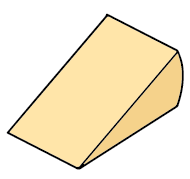
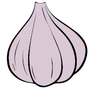

ABOUT
Caio e Benvenuto! This is your ulitmate guide to all the squisito pasta in New York City. This guide will help o.g. new yorkers, soon to be new yorkers, and people visiting new york.

New York has been called “the Italian American capital” because it is home to the largest Italian American population in the U.S. There are Italian communities in all five boroughs of the city,
most with deep roots in their area. Italians helped build the modern city and have made a profound impact on NYC's arts, politics, dialect, and, of course, cuisine. Italian food is a staple of the NYC diet.
Between 1900 and 1914, almost two million Italians emigrated to America, most arriving in New York. By 1930 NYC was home to over a million Italian Americans - a whopping 17 percent of the city's population.
Like most immigrants facing language and cultural barriers, the Italians created ethnic enclaves. The first communities were centered on Mulberry Street north of the Five Points, in Greenwich Village, and East Harlem.
Though New Yorkers labeled the newcomers “Italians,” the immigrants identified primarily with their home region or village and organized their neighborhoods accordingly. Thus, Mulberry Street was distinctly Neapolitan,
Mott Street held the Calabresi, Hester Street the Apulians, etc. Elizabeth Street was strictly Sicilian, and each block (even tenement) was inhabited by a specific Sicilian town.

Collection by Shiyao Wu
Website design by Talita Ozkok